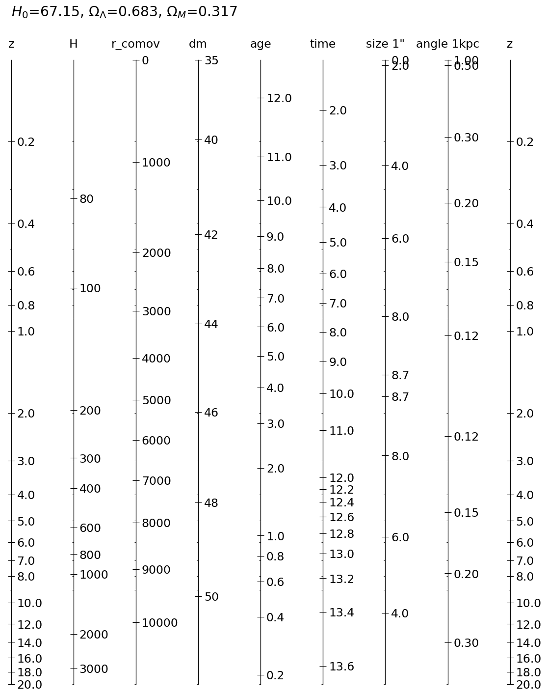
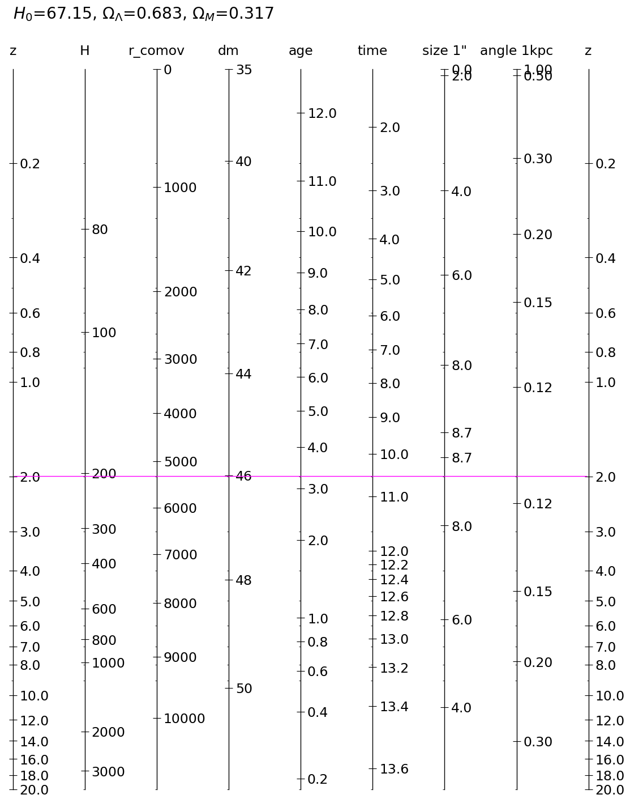

pyds.cosmonom¶
Calculate cosmological variables under the given parameters: Hubble constant(H0), Omega_Lambda, Omega_m
All equations and coding were referred to Paper-and-pencil cosmological calculator in Pilipenko (2013): http://adsabs.harvard.edu/abs/2013arXiv1303.5961P
[1]:
from pyds.cosmonom import cosmonom as cosmo
# H0: Hubble Constant, OL: Omega Lambda, Om: Omega M, zmin: minimun z, zmax: maximum z
# in order to avoid infinity value in the calculation, the minimum z is redefined as
# the value of min(zmax*0.1, 0.1) when zmin is zero
a = cosmo(H0=67.15,OL=0.683,Om=0.317,zmin=0.,zmax=20.)
[2]:
# Calculate the scaled-values with the given red-shift
zz = 2.
print "when z = %.1f:"%zz
print 'H = %f, r_comov = %f, dm = %f, age = %f, \ntime = %f, size 1" = %f kpc, angle 1kpc = %f"' \
%(a.Hz(zz), a.rz(zz), a.dmz(zz), a.age_z(zz), a.age0-a.age_z(zz), a.size_z(zz), a.angle_z(zz))
when z = 2.0:
H = 204.140418, r_comov = 5323.038697, dm = 46.016404, age = 3.275071,
time = 10.547657, size 1" = 8.602265 kpc, angle 1kpc = 0.116248"
[3]:
print help(a)
Help on instance of cosmonom in module pyds.cosmonom.cosmonom:
class cosmonom
| Calculate cosmological variables under the given parameters:
| Hubble constant(H0), Omega_Lambda, Omega_m
|
| All equations and coding were referred to Paper-and-pencil cosmological calculator in Pilipenko (2013):
| http://adsabs.harvard.edu/abs/2013arXiv1303.5961P
|
| keywords -- H0: Hubble constants in km/s/Mpc (default= 67.15)
| OL: Omega Lambda (default= 0.683)
| Om: Omega M (default=0.317)
| zmin: minimum value of red-shift (default=0.)
| zmax: maximum value of red-shift (default=20.)
|
| outputs -- self.zext: extremum value of z
| self.age0: self.age_z(0.) in Gyr
| functions -- self.Hz: H(z) in km/s/Mpc <-> self.zH: z(H)
| self.rz: r(z) in Mpc <-> self.zr: z(r) - comoving radius
| self.dmz: dm(z) <-> self.zdm: z(dm)
| self.size_z: 1" size(z) in kpc <-> self.zSize1, self.zSize2 - z(size) for z<zext, z>zext, respectively.
| self.angle_z: 1 kpc angle(z) in arcsec <-> self.zAngle1, self.zAngle2 - z(angle) for z<zext, z>zext, respectively.
| self.age_z: age(z) in Gyr <-> self.zage: z(age)
| self.zt : self.zage(self.age0-t) - z for the corresponding lookback time in Gyr
|
| Methods defined here:
|
| __init__(self, H0=67.15, OL=0.683, Om=0.317, zmin=0.0, zmax=20.0)
|
| draw(self, **keywords)
| Draw the scaled axes for the cosmological variables
|
| **keywords -- out: if given, the plot will be saved to the designated output file (type = string)
| z: if given, it will draw the horizontal line for the value of z so that it
| helps catching the corresponding variables. (type = float)
None
[4]:
#import os
%matplotlib inline
#figdir = os.environ["PYTHONFIG"]
figdir = './example_data/'
a.draw(out=figdir+"cosmonom.png")
z_extremum: 1.585763
size(zext): 8.718340, angle(zext): 0.114701

saved to ./example_data/cosmonom.png
[5]:
""" draw horizontal line for the given value of z """
#import os
%matplotlib inline
#figdir = os.environ["PYTHONFIG"]
figdir = './example_data/'
a.draw(out=figdir+"cosmonom.eps", z=2.)
z_extremum: 1.585763
size(zext): 8.718340, angle(zext): 0.114701
z: 2.000000
H(z) = 204.140418 km/s/Mpc
comoving radius r(z) = 5323.038697 Mpc
1 arcsec size(z) = 8.602265 kpc
angle 1kpc(z) = 0.116248 arcsec
age(z) = 3.275071 Gyr
lookback time(z) = 10.547657 Gyr

saved to ./example_data/cosmonom.eps